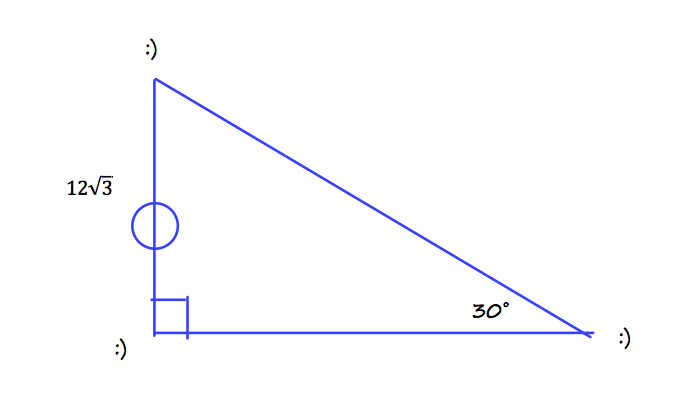
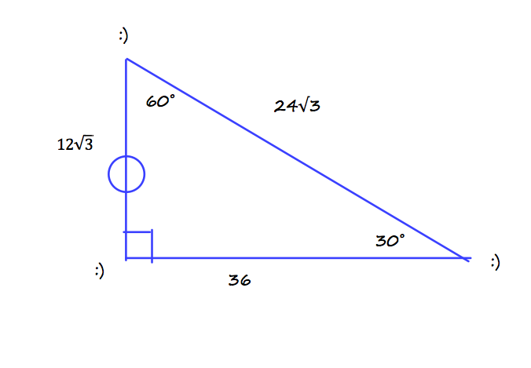
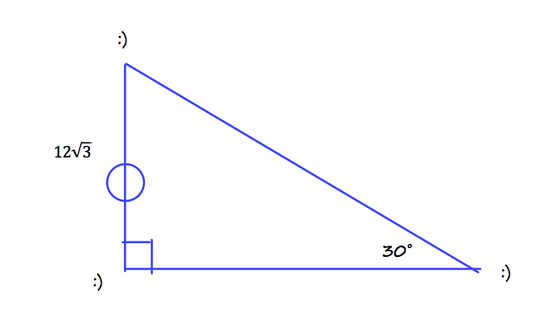
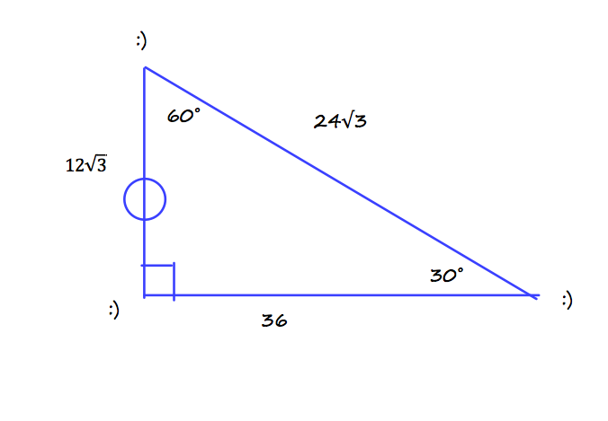

Section 9.1
______ is the opposite of tangent.
Answer: Cotangent is the opposite of tangent.
Problem
Find the Sign of π/6
Answer
Step 1: draw a coordinate plane Step 2: Draw the units circle and locate where π/6 would be Step 3: Draw your triangle and label Answer: √3/3


Problem
Solve the right triangle
Answer
Step 1: By looking at the triangle, it is obvious that it is a 30-60-90˚ triangle. So right away you know that the other side is 2.Step 2: identify the angles: 30˚, 60˚, and 90˚.
Use a calculator to find the inverse cosecant of 88˚.
Step 2: put in 88 and then close parenthesis; 88)
Step 3: put in "to the -1 power" on your calculator; ^-1
Step 4: press enter!
Note: make sure your calculator is in Degrees modeStep 1: press the inverse sine button on your calculator (sin-1)
Step 2: put in 88 and then close parenthesis; 88)
Step 3: put in "to the -1 power" on your calculator; ^-1
Step 4: press enter!
Section 9.2
Problem
List all 6 trig functions
- Sine
- Cosine
- Tangent
- Cosecant
- Secant
- Cotangent
Find 1 positive and negative angle that are coterminal with π/3
Step 1: Find where π/3 is on the units circle Step 2: Add and subtract 360˚ in radians (so 2π); 6π/3+π/3, π/3-6π/3 Step 3: Answer: 7π/3, -5π/3
Convert 33˚ to radians
Step 1: first write out 33˚ as a fraction; 33/1
Step 2: then mutliply it by π/180; 33/1 * π/180
Step 3: Simplify; = 11π/60
Step 2: then mutliply it by π/180; 33/1 * π/180
Step 3: Simplify; = 11π/60
ASSUME EVERYTHING IS A RIGHT TRIANGLE!
You are playing soccer on a field, and you and your freinds are passing a ball in a triangle. The length of 1 player from you is 12√3 feet away from you, and you are passing a ball to your freind at a 30˚ angle. Find the other angles and sides of the passing triangle.
Answer:
Step 1: DRAW A PICTURE! Step 2: Using your common knowledge, solve the right triangle
 
Step 1: DRAW A PICTURE! Step 2: Using your common knowledge, solve the right triangle
 
Section 9.3
Define the units circle
A circle that shows radian measures.
Find a referance angle for 2π/3
Step 1: locate 2π/3 on the units circle Step 2: Draw a line down to the x-axis Identify the type of sepcial triangle Answer: 60˚
Evaluate the function without using a calculator: Sin 150˚
Step 1: find the reference angle Step 2: Write down sides and angles Step 3: solve; answer: √3/2